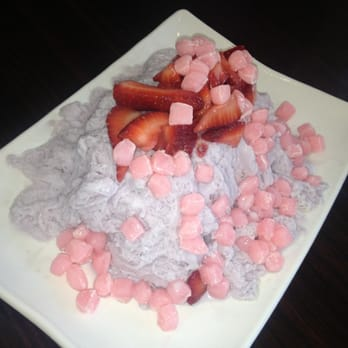

Snow Station Emulator
Odin Recipes Homepage
A Lovely Example of the Snow

The problem with shaved ice is the usual under pulverized texture of the solidified
water mixing with a sweet liquid applied on top. The flavorless quality of ice
reduces the capacity for layering flavor and creating a strong taste on a medium
that will be void of sugar juice by the time it melts into water. There is a way
to create something like ice cream and shaved ice all-in-one.
Yield 2 Servings
Method of pulverization is best handles with the use of a food processor. It is possible
to create the recipe with the use of a cheese grater, but freezing process will vary.
For skill level extreme, freeze large block when intending to utilize a cheese grater.
For skill level easy, freeze cubes (about 2 trays) to be grated using food processor.
Ingredients
Snow Base
- creamy beverage or juice of choice [2 cups] frozen
Possible Choices of Toppings
- fruit
- condensed milk
- mochi
- cereal
- oreo